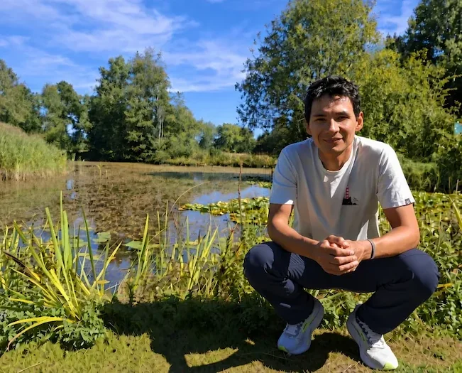

Über mich

Javier Carranza ist ein Softwareingenieur, der bewusst abseits des Lärms und der Eile arbeitet, die die heutige Technologiewelt dominieren. Mit mehr als 14 Jahren Erfahrung in internationalen Projekten ist er durch unzählige Codes gereist, an Bord verschiedener Raumschiffe, jedes mit seiner eigenen Besatzung und seinen eigenen Regeln – aber immer in dieselbe Richtung navigierend.
Er glaubt an Einfachheit, Qualität und langfristiges Denken, selbst wenn der Kontext zu schnellen und oberflächlichen Lösungen drängt.
Kürzlich hat er seine Fähigkeiten in der Cloud-Architektur weiter ausgebaut und sich zuletzt in das Gebiet der Künstlichen Intelligenz vertieft.
Er hat die Entstehung einer neuen technologischen Ära miterlebt und gestaltet diesen Transformationsprozess aktiv mit.
Er lebt in Bern, Schweiz, und ist offen für neue Herausforderungen, um dich bei der Optimierung deiner Arbeit zu unterstützen.
Über KettenKI
KettenKI entwickelt individuelle Software für kleine und mittlere Unternehmen in der Schweiz: KI-Assistenten, Websites und Apps nach Mass.
Wir legen grossen Wert auf Sicherheit und die Einhaltung gesetzlicher Vorschriften, da diese Technologien Schwachstellen aufweisen können, wenn sie nicht korrekt verwaltet werden.
Erst entwickeln, dann entscheiden: Eine funktionierende Version entsteht, bevor sich jemand festlegt. Überzeugt sie, sprechen wir über die nächsten Schritte. Wenn nicht, entstehen keine Kosten.

Es geht nicht darum, Menschen zu ersetzen, sondern ihnen effektive und verlässliche Unterstützung zu bieten.
Hast du ein Projekt im Kopf?
Jetzt anfragenMöchtest du meinen Werdegang als Ingenieur sehen? Zum Portfolio →